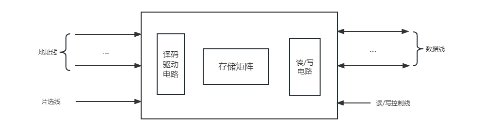

存储器
存储器的分类
存储介质
- 半导体存储器：TTL、MOS
- 磁表面存储器：磁盘、磁鼓、磁带
- 磁芯
- 光盘
存取方式
- 存储时间与存储单元的物理位置无关（随机存储器）：RAM、ROM
- 存储时间与存储单元的物理位置有关（串行存储器）：磁盘、磁带
存储内容可变性
- 只读存储器：ROM
- 既能读出又能写入：RAM
信息易失性
- 易失性存储器：RAM
- 断电后信息消失
- 又分静态RAM（SRAM）和动态RAM（DRAM）
- 非易失性存储器：ROM、PROM、EPROM、EEPROM
- 断电后仍然能保存信息
- PROM允许一次编程，写入后不可改变
- EPROM和EEPROM都允许多次编程
系统中的作用
- 主存储器
- 高速缓冲存储器（cache）
- 辅助存储器
- 闪存Flash
存储器的层次结构
存储器同时兼顾容量大、速度快、成本低是困难的，故计算机系统中采用多级存储器体系结构
{kind=link}
计算机系统中的一个高速小容量半导体存储器。存取速度快，但存储容量小。
计算机系统主要的存储器。能和cache交换数据和指令。
大容量辅助存储器。存储容量大，位成本低。
多级存储
graph LR
A[CPU] --> B[缓存] -->|速度| C[主存] -->|容量| D[辅存]
D --> C --> B --> A
A --> C
C --> ACPU约10ns，缓存约20ns，主存约200ns，辅存约10ms
半导体随机存取存储器
动态RAM（DRAM）和静态RAM（SRAM）的比较
| DRAM | SRAM | |
|---|---|---|
| 存储原理 | 电容 | 触发器 |
| 芯片引脚 | 少 | 多 |
| 功耗 | 小 | 大 |
| 价格 | 低 | 高 |
| 速度 | 慢 | 快 |
| 刷新 | 有 | 无 |
半导体存储芯片主要由存储矩阵、译码驱动电路和读/写电路组成。 
{kind=link}
- 片选线：选择存储芯片
- 读/写控制线：进行读/写操作
- 译码驱动：将地址总线的地址送来的地址号翻译成对应存储单元的选择信号
- 线选法（单译码）：一根字选线对应一根存储单元
- 重合法（双译码）：将线选法中单一的地址译码器分成了行地址译码器和列地址译码器，行和列的交汇处共同锁定一个单元
SRAM 存储器
双稳态触发器（6管MOS）存储信息，非破坏性读出，断电丢失。
SRAM采用二级译码方式，将地址分为x向、y向两部分，第一级进行x向、y向独立译码，然后在存储阵列中完成第二级译码
{kind=link}
{kind=link}
SRAM 芯片例子
{kind=link}
1Kx4位，由4096个基本单元电路组成
DRAM 存储器
使用电容上的电荷存储信息，分为三管式和单管式两种。
{kind=link}
{kind=link}
刷新
{kind=link}
{kind=link}
{kind=link}
- 集中刷新：在规定的一个刷新周期内，对全部存储单元逐行进行刷新
- 刷新的时候不能进行读写，称为“死区“
- 分散刷新：对每行存取单元的刷新分散到每个存储周期完成
- 好处是没有死区
- 异步刷新：分散刷新与集中刷新相结合
对于128x128矩阵的存储芯片进行刷新，存储周期为0.5μs，刷新周期为2ms：
- 集中刷新需要64μs刷新时间，可计算“死区”所占比率为 \(128\div 400\times 100\% =3.2\%\)
- （读写周期为0.5μs，存储周期为1μs）分散刷新需要128μs刷新时间
- 异步刷新每隔 \(2000\mu s\div 128\approx 15.6\mu s\) 刷新一行，每行用 0.5μs 用来刷新，死时间也为0.5μs
只读存储器 ROM
工作时只能读出，不能写入。其中存储的原始数据，必须在它工作之前写入。主要分为掩模ROM和可编程ROM两类。
结构简单，可靠性高
graph LR
A["MROM<br>厂家写好内容"] --> B["PROM<br>一次写操作"] --> C["EPROM<br>多次写，编程次数有限"]
C -.-> D["EEPROM<br>电擦除"]
C -.-> E["UVEPROM<br>紫外线擦除"]闪速存储器 Flash
计算机电擦除，价格便宜，集成度高，擦除速度快
- 浮空栅上带许多电子（负电荷）存储0，不带电荷存储1
固态硬盘SSD
基于闪存使用电子存储芯片阵列制成的硬盘
主存储器
并行存储器
提高CPU访问存储器的速度，需要空间或时间上并行
双端口存储器
{kind=link}
两个CPU同时异步地访问RAM。
为什么要异步访问
两个CPU同时对相同地址访存时，在以下两种情况会发生错误： * 两个端口同时对同一地址单元写入数据 * 两个端口同时对同一地址单元进行操作，一个写入数据，一个读出数据
双端口存储器采用BUSY标志进行解决这个问题。
多模块存储器
为了解决I/O问题，除了寻找更高速的原件和采用存储器层次结构外，调整主存的结构也可以提高访存速度。
{kind=link}
{kind=link}
{kind=link}
定量分析
假设模块存取一个字的存储周期为T，总线传送周期为t，存储器的交叉模块数为m。
{kind=link}
- 实现流水线方式，应当满足 \(T=mt\)
- 交叉存储器的模块数应当大于 \(\dfrac{T}{t}\)
- 连续存取m个字的时间为 \(t_1=T+(m-1)t\)
- 顺序方式存储器连续读取m个字所需时间为 \(t_2=mT\)
由于 \(t_1\lt t_2\)，交叉存储器的带宽大大提高了。
主存储器与CPU的连接
{kind=link}
连接原理
- 数据总线：其位数与工作频率乘积正比于数据传输率
- 地址总线：其位数决定了可寻址的最大空间
- 控制总线
容量扩展
单个存储芯片容量有限，故需扩展
位扩展法
增加存储字长。地址、片选、读写控制并联，数据端分别引出。
{kind=link}
字扩展法
增加存储字的数量。地址、数据、读写控制并联，片选区分范围。
{kind=link}
字位同时扩展法
地址线并联，数据线与片选结合。
{kind=link}
地址分配和片选
- 片选：CPU要实现对存储单元的访问，首先要选择存储芯片
- 线选法：高位地址线接至存储芯片片选端，每次1位有效
- 译码片选法：通过地址译码器芯片产生片选信号
- 自选：地址码→存储单元，芯片片内逻辑完成译码
存储器与CPU的连接
- 合理选择类型和数量
- CPU低位地址线与存储芯片相连
- 存储器经过扩位后于CPU数据线一致，直接连接
- 读写命令线
- 高电平读，低电平写
- 分离：RD读控制端，WE写控制端
- 片选线：芯片选中
高速缓冲存储器Cache
Cache是介于CPU和主存之间的小容量存储器，存取速度比主存快，由高速的SRAM组成。
cache的存在意义
解决CPU和主存之间速度不匹配的问题。其原理是程序运行中的空间局部性和时间局部性特征。
CPU和Cache之间的数据交换以字为单位，而cache与主存之间的数据交换以cache块为单位。
工作原理
- cache除包含SRAM外，还要有控制逻辑。控制逻辑一般与主存控制逻辑合成在一起，也可由CPU内部实现。
- CPU发出读请求，cache控制逻辑先检查cache中是否有该数据，若有，则直接从cache中读出，否则从主存中读出并存入cache中，必要时替换。
-
指标
- 命中率
- \(H=\dfrac{N_C}{N_C+N_m}\)，其中 \(N_C\) 表示 cache 完成存取的总次数，\(N_m\) 表示主存完成存取的总次数。
- 平均访问时间
- \(t_a=Ht_c+(1-H)t_m\)，其中\(t_c\) 表示命中时 cache 的访问时间，\(t_m\) 表示未命中时主存的访问时间。
- 访问效率
- \(e=\dfrac{t_c}{t_a}=\dfrac{t_c}{Ht_c+(1-H)t_m}=\dfrac{1}{H+(1-H)r}=\dfrac{1}{r+(1-r)H}\)，其中 \(r=\dfrac{t_m}{t_c}\) 表示主存慢于cache的倍率。
命中率与程序的行为、cache容量、组织方式、块的大小有关。
映射方式
cache与主存块的数据交换以块为单位，为了把主存块放到cache中，必须应用某种方法把主存地址定位到cache中，称为地址映射。
直接方式
{kind=link}
- 一个主存块只能拷贝到cache的一个特定行位置上去。行号=主存块号%总行数
- 地址结构：标记+行号+块内地址
对于一个任意地址，只需要对比一个标记，速度最快
cache存储空间利用不充分，命中率低
全相联方式
{kind=link}
- 主存块可以放到cache的任意位置
- 地址结构：标记+块内地址
cache存储空间利用充分，命中率高
需比较全部标记位，查找速度慢
组相联方式
{kind=link}
- 将cache分为u组，每组v行。主存块放到哪个组是固定的，存到该组哪一行是任意的。
- 组号 q = 主存块号 % 总组数
- 地址结构：标记+组号+块内地址
N路组相联映射
每N个cache行为一组
主存块替换算法
Cache的工作原理决定了它尽量需要保留最新数据，当一个新主存块需要拷贝到cache，而允许存放此块的位置都被其他主存块占满时，就要产生替换。
对于直接映射来说，把此特定位置的原主存块换出即可。对于全相联和组相联映射来说，需要选择一个主存块换出。如何选取的问题就是替换算法。
- 先进先出（FIFO）
- 若cache已满，选择最先被调入的cache块替换
- 最不经常使用（LFU）
- 若cache已满，选择一段时间内被访问次数最少的cache块替换
- 近期最少使用（LRU）
- 若cache已满，将近期内长久未被访问过的cache块替换
- 随机替换
- 若cache已满，随机选取cache块替换
cache写策略
Cache应当与主存内容保持一致，保持一致的方法有以下几种
- 全写法 write through：同时修改cache和主存，一般使用写缓冲
- 场景：数据准确率要求高，实时性高
- 写回法 write back：只写cache不写主存，块失效时一次性写主存
- 场景：写操作频繁/写密集型
- 写分配法 write allocate：将主存块调入cache，再写cache
- 搭配写回法
- 非写分配法 no write allocate：不将主存块调入cache，直接写主存
- 搭配全写法
虚拟存储器
基本概念
虚拟存储器由主存和辅存组成，在硬件和软件的共同管理下工作，地址统一编制，形成了庞大的地址空间。需要辅助硬件处理虚——实地址对应关系。
- 虚拟地址——虚拟空间——逻辑地址，编程时涉及
- 物理地址——实地址空间——实地址，实际的主存单元地址
判断虚地址对应内容是否装入主存。若存在，直接访问；若不存在，把包含该内容的页或段调入主存再由CPU访问。
基本信息传送单位
- 段，按程序逻辑结构划分——段表——段式管理
- 页，按主存物理空间划分——页表——页式管理
- 段页式管理：先分段，段内分页
基本原理
虚拟存储器用到了程序的局部性原理，它是指程序在执行的过程中，常常会局部于某一存储单元附近，程序的局部性主要体现在空间局部性和时间局部性。
页式虚拟存储器
虚地址空间被分成等长大小的页，称为逻辑页；主存空间也被分成同样大小的页，称为物理页。虚拟地址有两个字段：虚页号和页内地址。
页面长度固定，页表简单，调入方便
程序最后一页零头可能无法利用，处理、保护和共享不方便
段式虚拟存储器
段式虚拟存储器中，段具有逻辑独立性，易于实现程序的编译、管理和保护，也便于多道程序共享。虚拟地址分为两部分：段号和段内地址。
具有逻辑独立性，使它易于编译、管理、修改和保护，也便于多道程序的共享
段长度可变，分配空间不便，容易在段间留下碎片，不好利用，造成浪费
段页式虚拟存储器
把程序按逻辑单位分段以后，再把每个段分成固定大小的页。程序对主存的调入/调出是按页面进行的，但它又可以按段实现共享和保护。虚地址分为段号、段内页号、页内地址三部分。
兼具页式和段式虚拟存储器的优点，可以按段实现共享和保护
在地址变换过程中需要两次查表，系统开销比较大
TLB快表
把经常访问页的页表项存放在Cache的TLB中，是主存慢表的副本，一般使用相联存储器。查找时快慢同时进行，提高了访问速度。
graph LR
TLB-->页表-->cache-->主存-->外存cache和虚拟存储器的比较
| 虚拟存储器 | Cache |
|---|---|
| 软硬件共同实现，逻辑存储器 | 硬件存储器 |
| 解决主存容量 | 解决系统速度 |
| 未命中损失更大 | 未命中损失较小 |
| 不命中时，先由硬盘调入内存 | 不命中时，主存和CPU直接通信调入cache |